Help & support
Get support
We are a small team and reply to every message. Reach us any time and we will help you get set up or sort out a problem.
Getting started
How the app is organised
RasidhuPOS is a shop counter you run from one window. A tab bar runs down the left; the tab you pick fills the rest of the screen. The bar along the bottom shows sync status, the clock, the Quick Report chip and a support link.
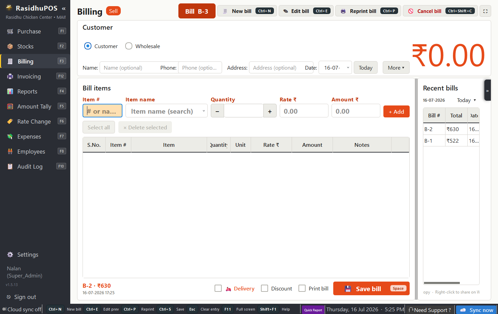
The tabs
| Tab | What it is for |
|---|---|
| Purchase | Record stock you buy from suppliers. |
| Stocks | Enter and read each day's closing stock and wastage. |
| Billing | Ring up sales and print or share bills. |
| Invoicing | Design your receipt and A4 invoice layout. |
| Reports | Sales, purchase, stock, profit and other analytics. |
| Amount Tally | Close out the day's cash and reconcile it. |
| Rate Change | Change item sale prices, with a change history. |
| Expenses | Record shop spending by category. |
| Employees | Staff records, salary and payments. |
| Audit Log | A timeline of who changed what, with restore. |
| Settings | Every configuration option (opens a dialog). |
Getting started
Signing in
Each person has their own login. The owner account (Super Admin) can see every shop and every setting; cashier and admin accounts are scoped to their shop and to the tabs the owner allows.
- Start RasidhuPOS. On the login screen, pick your account.
- Type your password (or PIN, if your account uses one) and confirm.
Selling & buying
Billing (make a sale)
The Billing tab is where you ring up a sale, enter the customer and item lines, take payment, and save the bill. Saving prints and/or saves a bill image, and can share it on WhatsApp or email.
The screen, top to bottom
- Action bar: the auto bill number badge, and the New bill, Edit bill, Reprint bill and Cancel bill buttons, plus the full-screen toggle.
- Customer card: the "Customer" and "Wholesale" choice, a large live total (Customer mode), and Name / Phone / Address / Date, plus a "More" button for email, GST state, GSTIN and an invoice description.
- Ledger strip (Wholesale only): Previous balance, This bill, They paid and Closing balance.
- Bill items: the entry row (Item #, Item name, Quantity, Rate, Amount, and "+ Add"), the line table, and a footer with Delivery, Discount, payment fields, "Print bill" and "Save bill".
- Recent bills: a date-range list of recent bills you can copy, view, reprint or share.
How to make a walk-in (Customer) bill
- Leave the Customer option selected (it is the default).
- Optionally fill Name, Phone or Address. Filling any of these ticks "Delivery" automatically.
- In Item #, type an item code or name and select it (or pick from the dropdown). The name and rate fill in.
- Enter the Quantity, then the Amount if you want to bill by rupee value, and click + Add to add the line.
- Repeat for each item. Watch the large total in the top right.
- Optionally tick Discount (owner password) and type the rupee amount off.
- Click Save bill.
How to make a Wholesale bill (with a running account)
- Choose the Wholesale option.
- Pick the customer from the Wholesale dropdown. The phone fills in for you.
- Add items the same way. Here you type the Rate freely (no owner password needed).
- Enter what they paid in the cash Amount and/or UPI field. The ledger strip updates Previous balance, This bill, They paid and Closing balance live.
- Save. Any unpaid amount stays on the customer's running balance (khata).
Editing, cancelling and restoring
- Edit a bill: click Edit bill (owner password), type the number and pick the issue date, then Open bill. The bill keeps its number when you save.
- Cancel a bill: click Cancel bill (owner password), type the number and date, confirm. It is a soft delete: the bill stays in the records (shown struck through) for audit.
- Restore a cancelled bill: right-click the struck-through row in Recent bills and choose "Restore this bill". It also restores from the Audit Log.
- Reprint or share: right-click a recent bill row for View, Copy bill image, Send via WhatsApp, Send by email, Reprint or Edit.
Key controls
| Control | What it does |
|---|---|
| Item # | Accepts both a number and a name. Type "1" to match code 1, or "chi" to match Chicken items, then select it. |
| Rate | For a customer sale the saved rate is used; changing it needs the owner password. For wholesale you type it freely. |
| Amount | Typing an amount back-solves the quantity (amount divided by rate). |
| Delivery | Marks the bill a delivery. Tick "Send to WhatsApp" to auto-send the bill image on save (needs a phone). |
| Print bill | Prints the receipt on save. It is off and disabled until a receipt printer is set in Settings. Untick it to save without printing. |
| Save bill | Saves the bill, prints it (if Print bill is ticked), and shares it if configured. |
Selling & buying
Purchase (record stock)
The Purchase tab records stock you buy from suppliers: items, quantities, per-unit rates and payment. It mirrors Billing, and keeps a running supplier ledger so you always know what you owe each supplier.
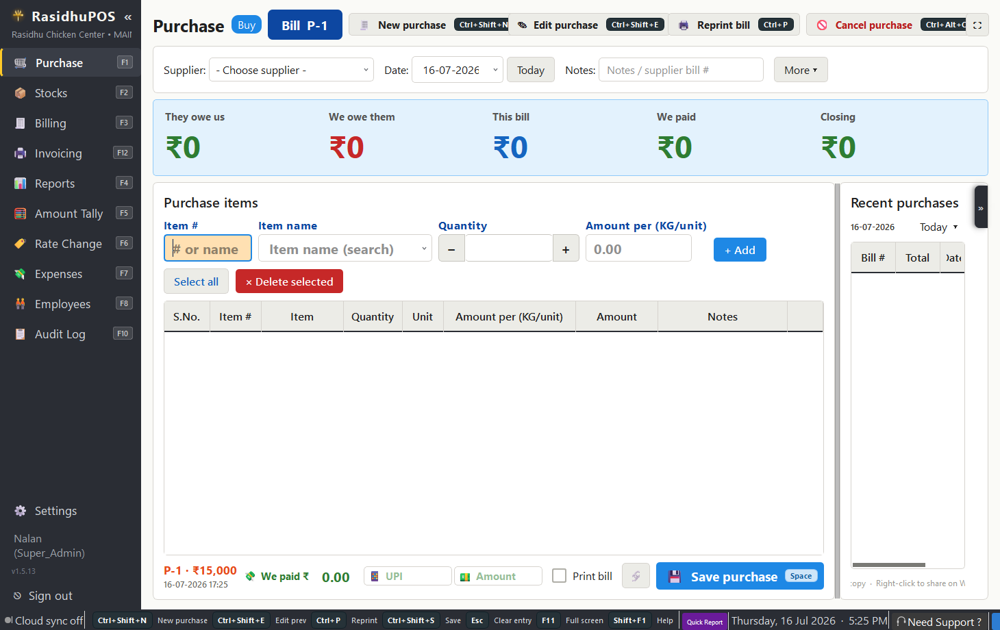
How to record a purchase
- Pick the supplier from the Supplier dropdown. (Add suppliers in Settings › Suppliers.)
- Optionally change the Date (or click "Today") and type a note such as the supplier's bill number.
- In Item #, type a code or name and select it.
- Enter the quantity, then the per-unit rate (the faint hint is the last rate you paid this supplier for that item), and click + Add to add the line.
- Repeat for each item. Enter what you paid in the cash Amount and/or UPI field; the Closing ledger card updates live.
- Toggle Print bill, then click Save purchase.
The supplier ledger
The five cards across the top read: They owe us, We owe them, This bill, We paid and Closing. The closing balance is the previous balance plus what you paid, minus this bill. Green means they owe you; red means you owe them.
Editing, cancelling and restoring
- Edit: "Edit purchase" (owner password), type the number and date, "Open purchase". Or double-click a row in Recent purchases and choose "Edit (owner)".
- Cancel: "Cancel purchase" (owner password), type the number and date, confirm. Soft delete, kept for audit.
- Restore: right-click the struck-through row in Recent purchases and choose "Restore this purchase".
Selling & buying
Rate Change (sale prices)
Change your items' selling prices in one place, with every change logged. New prices apply immediately to new bills and to stock valuation. Already-saved bills are never changed.
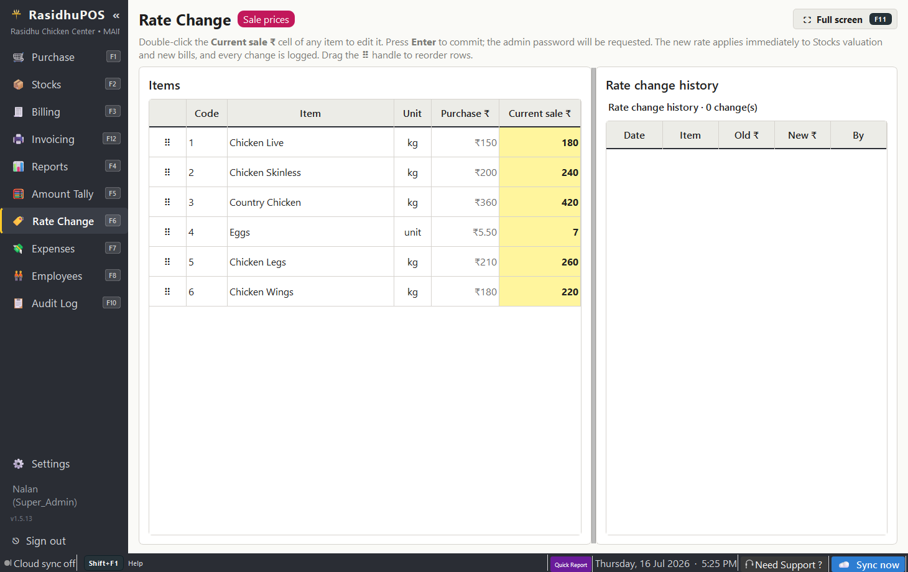
How to change an item's sale rate
- Open the Rate Change tab.
- Double-click the item's Current sale ₹ cell (owner and admin view) or Rate ₹ cell (cashier view).
- Type the new price and confirm the edit.
- Enter the admin password when prompted. The cell updates and the change appears in the history pane on the right.
Catalog
Items
Your product list. Items are looked up by their Item # in Billing and Purchase. Manage them in Settings.
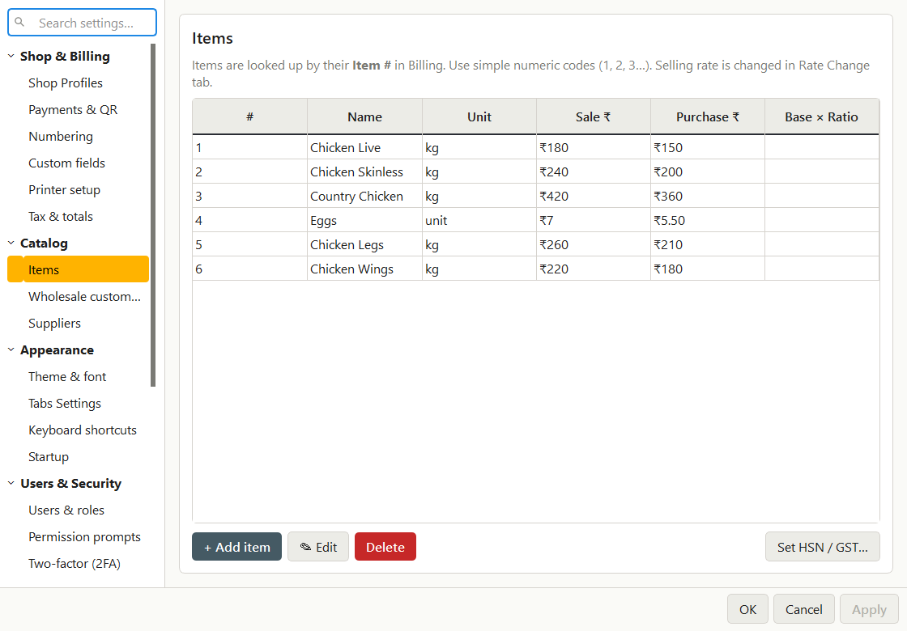
How to add an item
- Open Settings and go to Catalog › Items.
- Click + Add item.
- Give it a short Item # (a simple number like 1, 2, 3 is easiest to type at the till), a Name, and a Unit (for example kg or unit).
- Enter the Sale ₹ price and the Purchase ₹ (cost) price. Optionally set an opening stock.
- Click Apply or OK to save. The item is now available in Billing, Purchase, Stocks and Rate Change.
| Field | What it means |
|---|---|
| # | The item code you type in the Item # box while billing. Keep it short and unique. |
| Name | The item name, shown on the bill and searchable in the Item name box. |
| Unit | The selling unit, for example kg or unit. |
| Sale ₹ | The default selling price. Change it later from the Rate Change tab so the change is logged. |
| Purchase ₹ | The cost price, used for profit and stock valuation. |
| Set HSN / GST | Optional tax details (HSN code and GST rate) for GST invoices. |
| Base × Ratio | For a derived item (for example a cut priced as a ratio of a base item), links it to its base. |
Catalog
Wholesale customers & suppliers
Saved accounts you bill or buy from on a running balance. Walk-in customers do not need an account, you just type their name on the bill. Wholesale customers and suppliers are saved here so their ledger carries over.
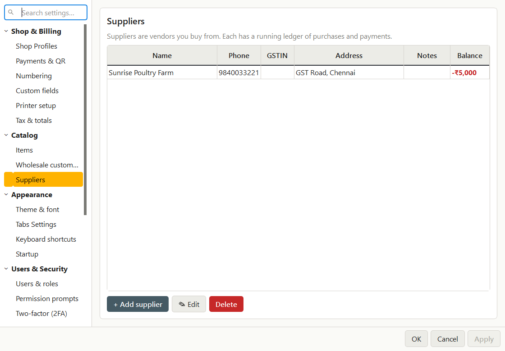
How to add a wholesale customer or supplier
- Open Settings and go to Catalog.
- Pick Wholesale customers (for a shop or hotel you sell to on credit) or Suppliers (for a farm or wholesaler you buy from).
- Click Add, then fill the Name, Phone, Address and, if you keep an opening balance, the amount already owed.
- Save. The account now appears in the Wholesale dropdown in Billing (customers) or the Supplier dropdown in Purchase (suppliers), with its running ledger.
Daily operations
Stocks
A daily stock workbook. Enter each item's actual closing count for a chosen day; opening, purchased and sales reconcile automatically, and the day's stock loss (sinkage) is worked out for you.
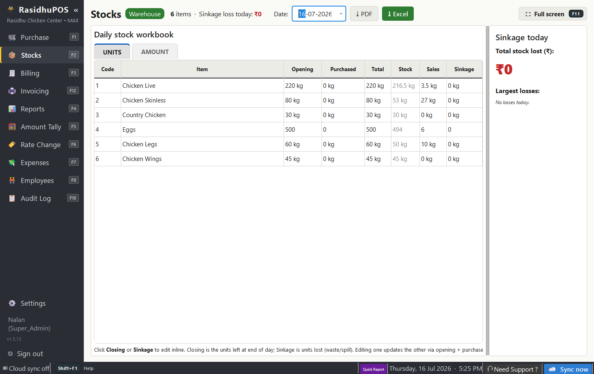
It follows one simple identity: opening + purchased = closing + sold + sinkage.
How to record closing stock
- Open the Stocks tab and set the Date.
- On the UNITS tab, click the Stock cell for an item and type the count left at the end of the day, then move to the next item. (You can instead type the units lost into the Sinkage cell and let Stock recompute.)
- Read the day's total loss and the biggest losses in the "Sinkage today" card. Switch to the AMOUNT tab for the rupee view.
Daily operations
Expenses
Record shop spending (cash and/or UPI), organise it into colour-coded categories, and see per-day and per-category totals.
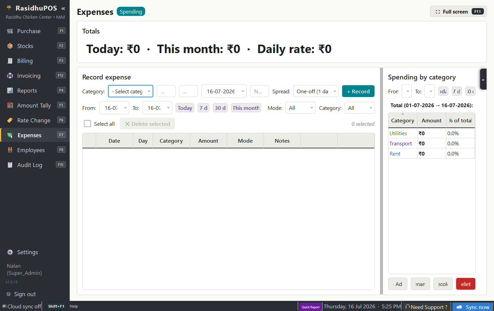
How to record an expense
- Open the Expenses tab.
- Pick a Category.
- Type the cash amount in 💵 Amount ₹, the UPI amount in 📱 UPI ₹, or both.
- Set the Date if it is not today, and choose a Spread (leave "One-off (1 day)" for a normal same-day expense; longer spreads amortise the daily share).
- Optionally add a note in Notes / who paid, then click + Record.
How to add an expense category
- In the "Spending by category" pane on the right, click + Add.
- Type a Name (for example Rent) and pick a colour with Pick colour....
- Click Save. Use Rename, Recolor or Delete to manage existing categories.
Daily operations
Amount Tally (day close-out)
Reconcile a single day's cash at close: expected cash (Total A) versus what you counted and paid out (Total B). The banner tells you if the day is balanced, over or short. It is a cash-only view (UPI is tracked separately).
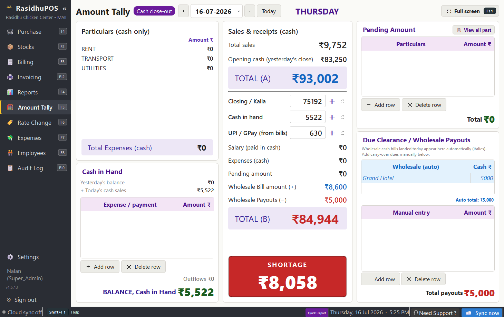
How to close out a day
- Open the Amount Tally tab and set the date with the previous / next day arrows or the Today button.
- Count the cash and type it into Closing / Kalla and Cash in hand (use the + button to add to a value, the reset button to revert to the auto figure).
- Add any rows under Pending Amount and Due Clearance / Wholesale Payouts.
- Read the banner: CORRECT AMOUNT (balanced), EXCESS (over, green), or SHORTAGE (short, red).
Daily operations
Daily Sales (quick report)
A one-day sales snapshot you can open from anywhere, split into retail (walk-in) versus wholesale (hotel), with per-item totals.
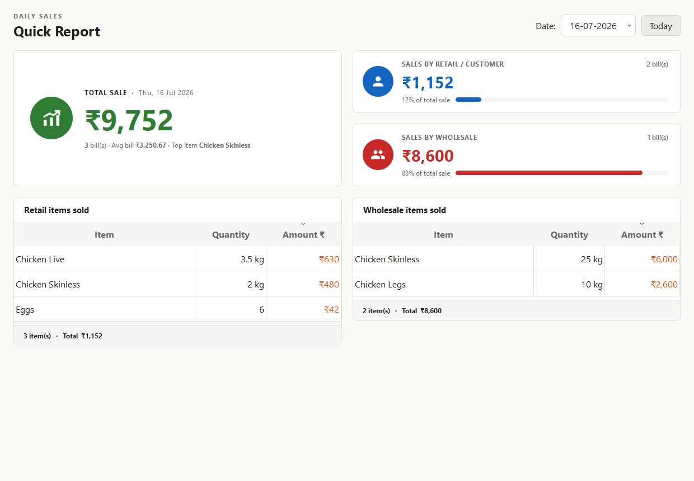
- Click the Quick Report chip in the bottom bar.
- Pick a day with the Date picker or the Today button.
- Read the hero for the grand total, bill count, average bill and top item; the two panels for the retail vs wholesale split; and the two tables for per-item quantity and amount.
Reports
Reports (Analytics)
Query, chart and export every kind of business report for any date range and any shop, plus a cross-shop Overview dashboard. Reports update automatically as you change the filters, there is no "Generate" button.
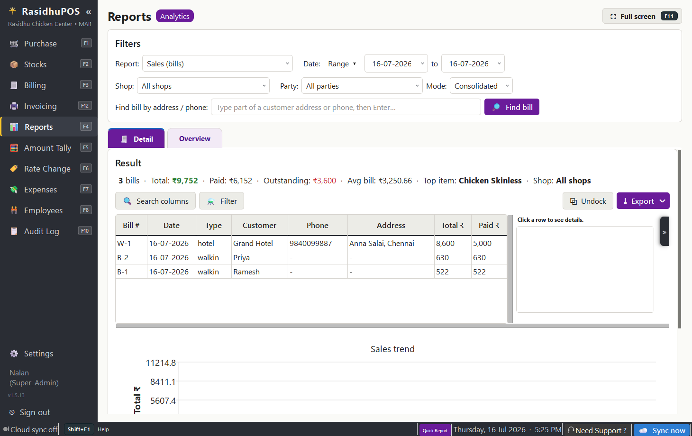
How to run a report
- Open the Reports tab.
- Choose a type in the Report dropdown.
- Set the dates with the Range presets (Today, 7 days, 30 days, 90 days, This year, Custom range) or the From / To pickers.
- Narrow further with Shop, Party, Mode or Item as offered. Click a column header to sort.
- Use ⤓ Export for PDF, Excel, CSV or "Copy as image", or ⧉ Undock to open the result in its own window beside another report.
The report types
- Sales (bills), Purchases, Stock + wastage + valuation
- Party ledger, Supplier ledger statement, Profit & Loss
- Expense by category, Cash & UPI accounts, Day-end tally sheet
- Weekly purchase by category, Items Sold (aggregate)
- Item-wise sales (customer vs wholesale), Item-wise P/L, Item List / Rate Card
- Employee salary, Employee ledger (detail)
Invoicing & printing
Invoicing & bill design
Design exactly how your printed bill looks. A live preview shows your real layout; drag elements to move them, resize them, and edit the text. Separate layouts exist for the customer bill, the wholesale bill and the purchase bill.
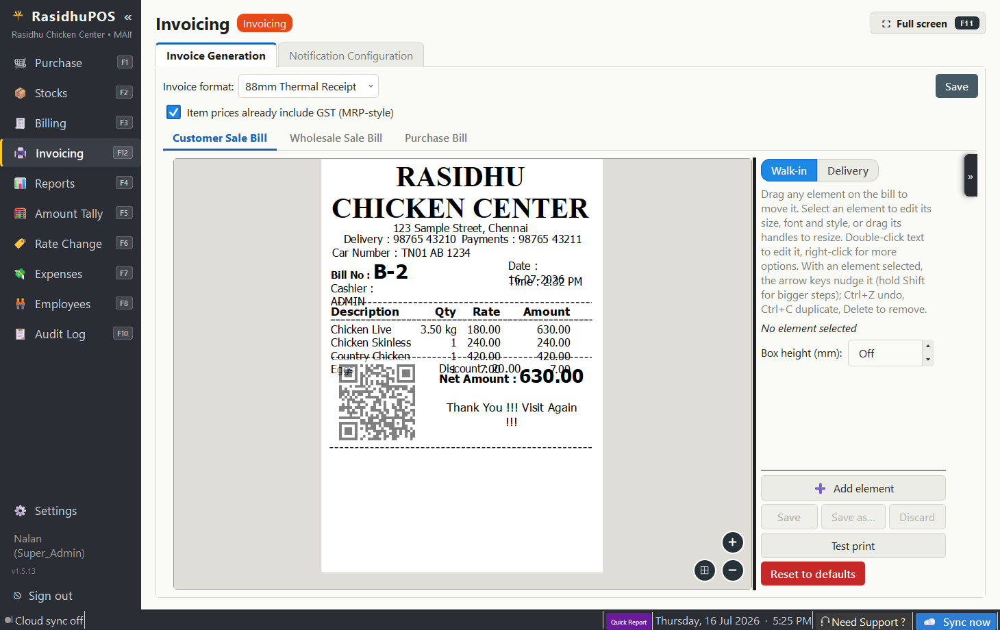
How to design your bill
- Open the Invoicing tab.
- Pick the Invoice format (for example "88mm Thermal Receipt" or an A4 letter-pad), and tick Item prices already include GST (MRP-style) if that matches your pricing.
- Choose which layout to edit with the Customer Sale Bill, Wholesale Sale Bill or Purchase Bill tab.
- On the live preview: drag an element to move it; select it to change its size, font and style, or drag its handles to resize; double-click text to edit it; right-click for more options.
- Use + Add element to add fields or text. Click Test print to try it on your printer, then Save. Reset to defaults restores the standard layout.
Staff
Employees
Keep staff records, daily salary rates and payment history. Once an employee is added you can log their earnings and record payouts, and see what balance is still due.
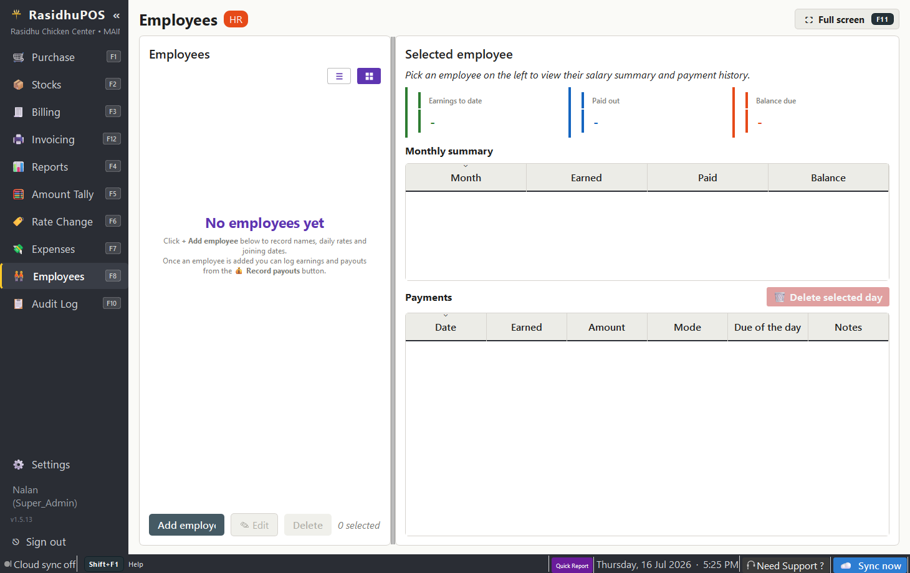
How to add an employee and record pay
- Open the Employees tab.
- Click Add employee and record the name, daily rate and joining date.
- Pick the employee on the left to see Earnings to date, Paid out and Balance due, plus the monthly summary.
- Use the payout action to log a payment (date, amount, mode, notes). Salary payouts also appear under the reserved "Salary" category in Expenses.
Settings
Settings overview
Every configuration option lives in the Settings dialog, organised into a tree on the left. Changes are buffered: nothing is saved until you click Apply or OK, and Cancel discards them.
The tree has seven groups. Each group heading is itself a landing page, with detailed pages beneath it:
| Group | Pages inside it |
|---|---|
| Shop & Billing | Shop Profiles, Payments & QR, Numbering, Custom fields, Printer setup, Tax & totals |
| Catalog | Items, Wholesale customers, Suppliers |
| Appearance | Theme & font, Tabs Settings, Keyboard shortcuts, Startup |
| Users & Security | Users & roles, Permission prompts, Two-factor (2FA), Active sessions |
| Data & Sync | Cloud sync, Backup & retention, Reset installation |
| System | Diagnostics |
| About | Subscription, Software updates, Customer support |
Settings
Shop & Billing settings
Everything about your shop identity and how bills are numbered, taxed and printed.
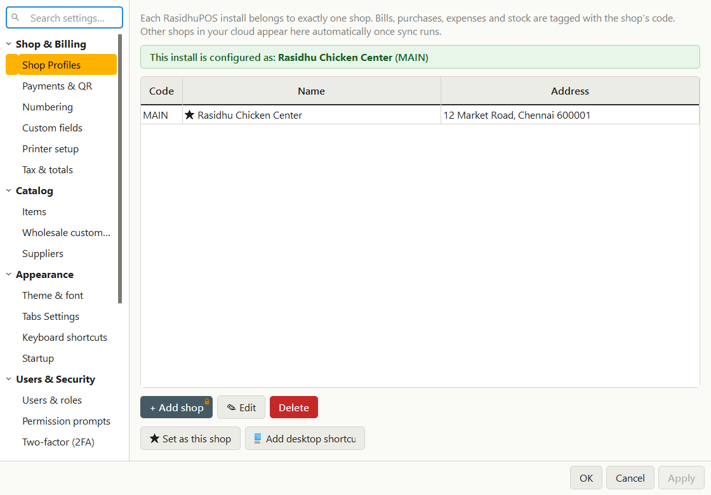
| Page | What you set there |
|---|---|
| Shop Profiles | Each shop's name, address, phone and GSTIN, and which shop is active. |
| Payments & QR | Your UPI / payment details and the QR code printed on bills. |
| Numbering | Bill and purchase number prefixes and how often the counter resets (daily, per financial year, or continuous). |
| Custom fields | Extra fields you can add to a bill or purchase (shown on the invoice). |
| Printer setup | Which receipt printer to use and the default output (thermal receipt or A4 letter-pad). |
| Tax & totals | GST behaviour, rounding and how totals are calculated. |
Settings
Appearance settings
Make the app comfortable to use: theme, text size, which tabs show, shortcut keys, and what happens at startup.
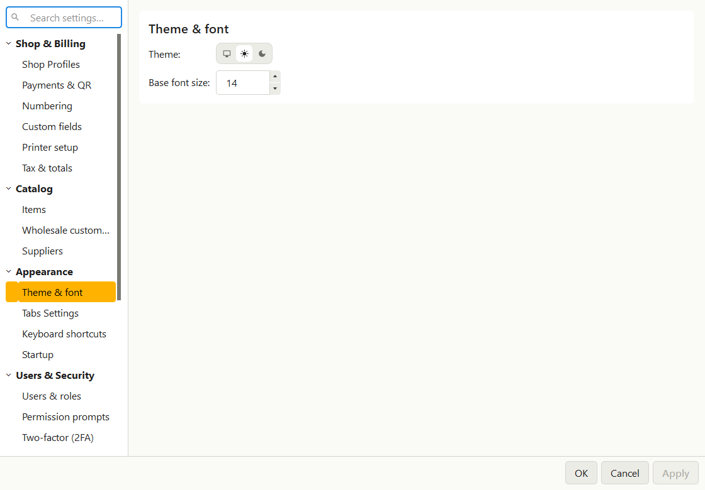
| Page | What you set there |
|---|---|
| Theme & font | Light or dark theme, the text size, and whether a helpful tip shows on the loading screen at startup. |
| Tabs Settings | Rename tabs, change their colour, and hide tabs you do not use. |
| Keyboard shortcuts | View and set your own shortcut keys for actions such as new bill, save and reprint. Because they are yours to change, this guide does not list fixed keys. |
| Startup | What the app does when it opens. |
Settings
Users & Security settings
Manage who can sign in, what each account can do, and the security controls that protect sensitive actions.
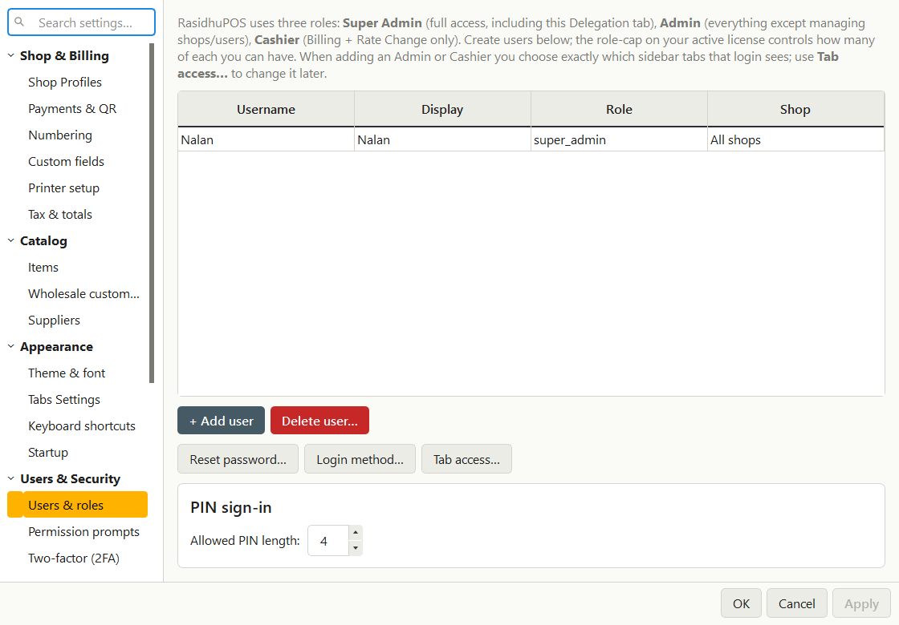
| Page | What you set there |
|---|---|
| Users & roles | Create and edit accounts (owner / admin / cashier), reset passwords, and choose which tabs each role can open. |
| Permission prompts | Which sensitive actions ask for the owner password (for example changing a rate, applying a discount, deleting an expense), and the "Don't ask again" choices. |
| Two-factor (2FA) | Pair Google Authenticator to protect Super Admin actions. See Two-factor sign-in. |
| Active sessions | See where the account is currently signed in. |
Settings
Data & Sync settings
Control cloud backup, local backups and the option to reset the installation.
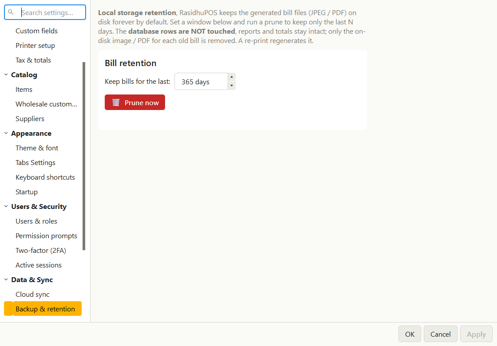
| Page | What you set there |
|---|---|
| Cloud sync | Turn cloud backup on or off and sign in with Google. See Cloud sync. |
| Backup & retention | How long bills, images and history are kept, and local backup options. |
| Reset installation | Wipe this installation back to a clean state (protected by 2FA when it is set up). Use with care. |
Settings
System & About
Diagnostics, your subscription, software updates and support live here.
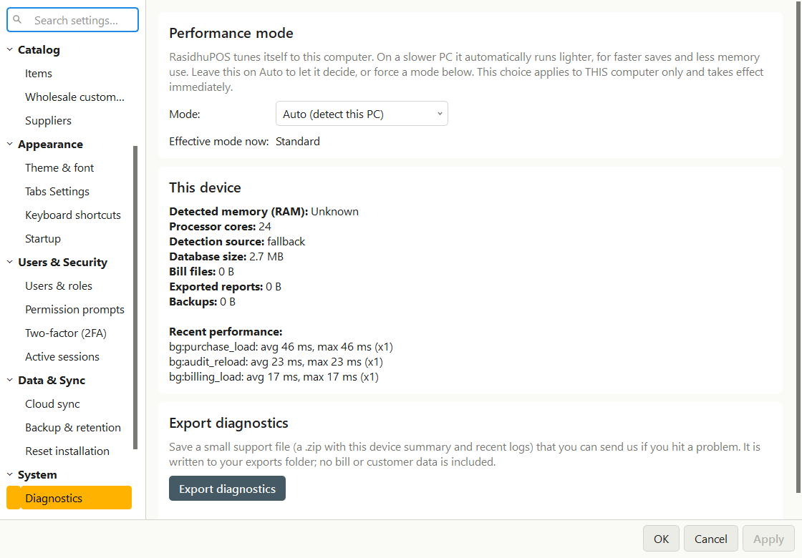
| Page | What you find there |
|---|---|
| Diagnostics | Technical details and logs, handy when you contact support. |
| Subscription | Your plan, caps and expiry, and the Subscribe / Renew buttons. See Subscription. |
| Software updates | Check for and apply app updates. See Software updates. |
| Customer support | How to reach support from inside the app. |
Account & security
Two-factor sign-in (2FA)
Pair Google Authenticator on your phone with the owner (Super Admin) account. Once paired, the 6-digit code from your phone is required to reinitialize the installation and to make changes to a Super Admin account. Until then those actions stay locked.
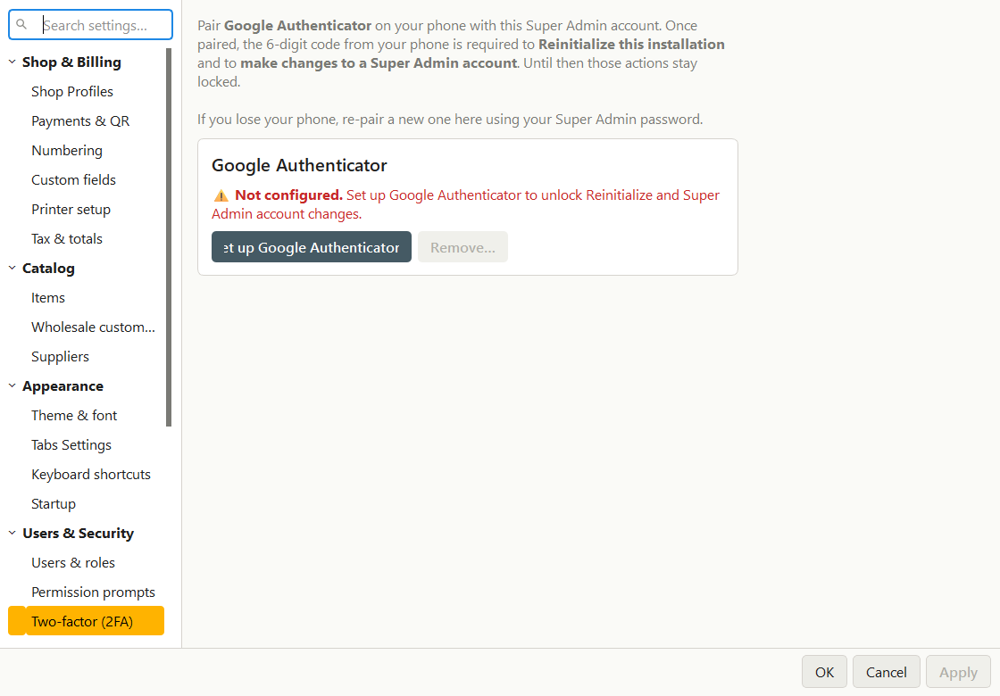
How to set up 2FA
- Install Google Authenticator (or any compatible authenticator app) on your phone.
- Open Settings and go to Users & Security › Two-factor (2FA).
- Click Set up Google Authenticator and scan the QR code (or type the shown key) into the app.
- Enter the current 6-digit code to confirm the pairing. The page then shows it as configured.
Account & security
Subscription
Your subscription is linked to your Google account and is valid for one year. The plan sets your caps: how many shops, how many bills and purchases per day, and how many staff accounts. It works on both the desktop and Android apps signed into the same Google account.
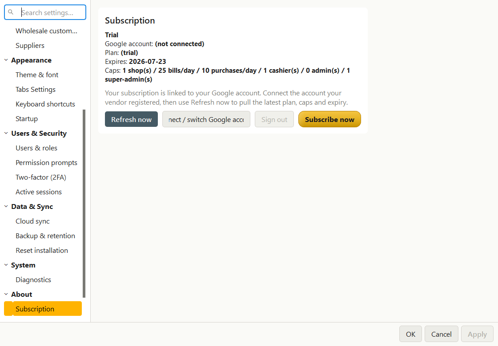
How to subscribe or renew
- Click Connect / switch Google account and sign in with the Google account you want the subscription tied to.
- Click Subscribe now, choose your plan, and pay by UPI.
- Submit your payment reference. Activation is manual and normally happens within one business day.
- Once activated, click Refresh now to pull the latest plan, caps and expiry into the app.
Account & security
Cloud sync
RasidhuPOS is offline-first. While cloud sync is on, every change is also written to a Google Sheet on your signed-in Google account, so other shops or machines signed into the same account stay in sync. Everything keeps working offline; pending changes are queued and uploaded when the connection returns.
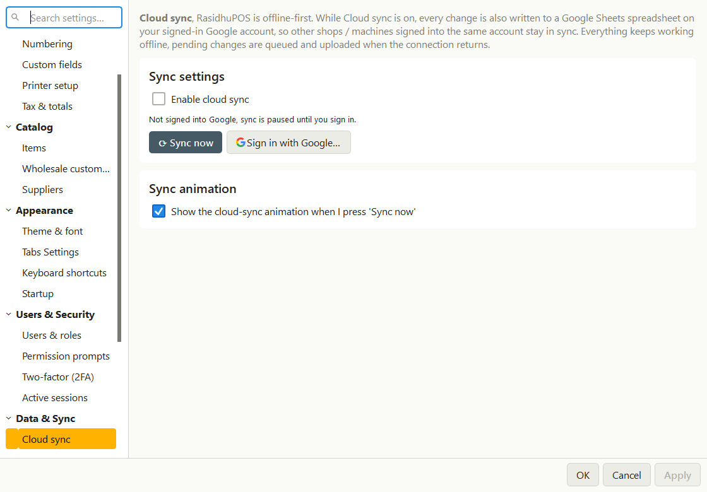
How to turn on cloud sync
- Open Settings and go to Data & Sync › Cloud sync.
- Click Sign in with Google... and sign in.
- Tick Enable cloud sync.
- Press Sync now at any time to push and pull immediately (a short sync animation plays, which you can turn off on the same page).
Account & security
Software updates
Keep the app current. RasidhuPOS can check for a newer version and apply it for you; your data is untouched by an update.
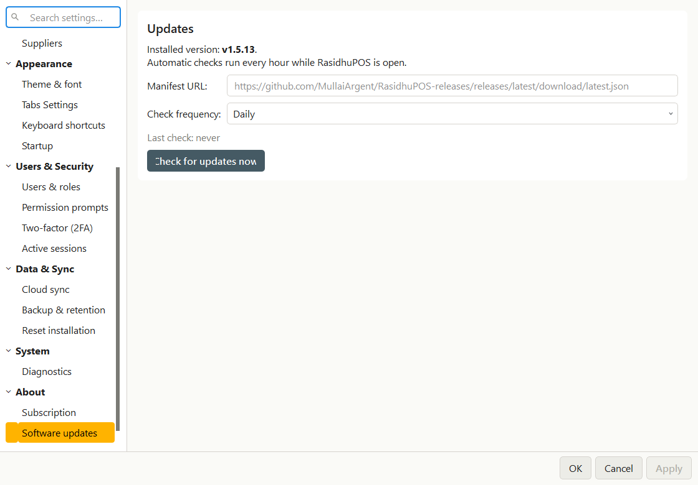
- Open Settings and go to About › Software updates.
- Use the check-for-updates action. If a newer version is available, download and apply it.
- The app restarts into the new version. Your bills, items and settings carry over unchanged.
Account & security
Audit Log
A read-only, filterable timeline of who changed what, and from which shop. It is also where an admin can restore a deleted or cancelled record.
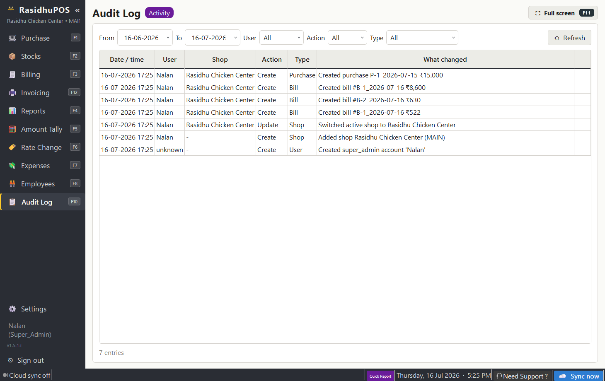
How to view and filter activity
- Open the Audit Log tab.
- Adjust the From / To dates and optionally pick a User, Action or Type. The table re-queries as you change a filter.
- Double-click any row to open the entry detail, with a before / after list of what changed.
How to restore a deleted or cancelled record
- Filter to find the row (Action is "Delete" or "Cancel").
- Click the blue Restore button in the last column.
- Confirm. The record is brought back and reappears in its tab, re-applying any stock and totals.